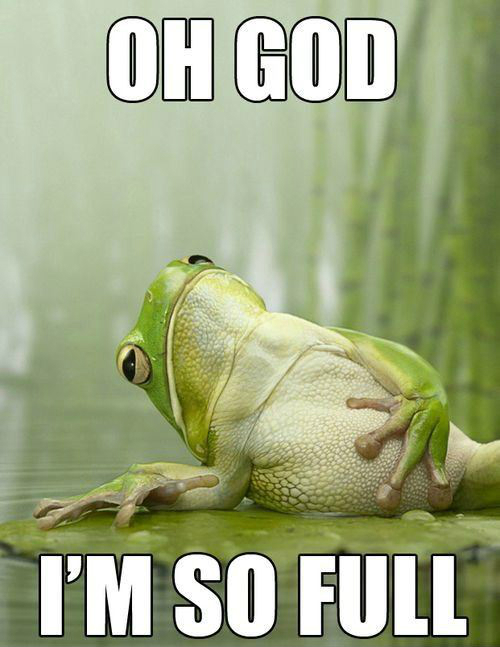

Jänes ja karu on seenel. Karu leiab kärbseseene. Ja hakkab seda üles võtma.
Jänes karjub karule: "Ära seda seent võtta see on kärbseseen!!"
Karu: "Ah, las kärbes otsib endale uue seene."Ja korjab seene üles.
Kaks lõvi istuvad puuris ja silmitsevad kaasaskantava apteegi sisu ja sarvraamidega prille.
"Hea loomaarst oli," ütleb üks.
"Jah," nõustub teine, "kahju, et enam tükikestki järel pole..."

Määramist võid alustada mistahes tunnuste grupist. Mida rohkem kolmanda
taseme tunnuseid sa eri tunnusekategooriate all valid, seda kitsamaks muutub otsing.
Samas, valides enam kui ühe valiku kolmanda taseme sama kategooria tunnustest
(näiteks mitu kübara värvust), suureneb tunnustele vastavate seente nimekiri.Tehtud
valikuid saad tühistada vastaval sümbolil teistkordse klõpsamisega.
Lisaks saab valikuid tühistada ka tulemuste ülaosas (otsingutulemustele päises).
Iga taseme tunnuste täpsustamiseks leiad abi väikesel rohelisel küsimärgiikoonil klõpsates.
Valikul aitavad sind ka illustratsioonid. Keskmisele eestlasele seostub trühvel tõenäoliselt
šokolaadikommiga. Sõna trühvel tuleneb ladinakeelsest väljendist tuber, mis tähendab “köbrukest”
või “kühmu”. Tõsi, šokolaadikommid näevad kühmukujulised välja, kuid trühvleid kasutatakse ka
botaanilise mõistena teatud liiki seente tähistamiseks.
Mis on trühvlid? Trühvliks nimetatakse mugulakujulist seent, mille viljakeha kasvab maa sees.
Trühvlid elavad sümbioosis puudega, milleks on tavaliselt tammed. Erinevaid trühvliliike on kirjeldatud ligikaudu 1000,
kuid vaid mõned neist on Tuber perekonda kuuluvad hinnatud söögiseened. Trühvlid jaotatakse mustadeks ja valgeteks.
Ühe grammi turuhind on kaks kuni seitse eurot, olenevalt viljakehade suurusest, värskusest ja seeneliigist.
Oma loodusliku leviala piires on kõik trühvlid üsna haruldased, mistõttu nende leiukohti kiivalt varjatakse.
Vabas looduses otsitakse trühvleid trühvlisigade või koerte abil. Praegu on ainsaks tunnustatud tõuks romagna veekoer,
kuigi praktiliselt on võimalik selleks otstarbeks treenida igat tõugu.